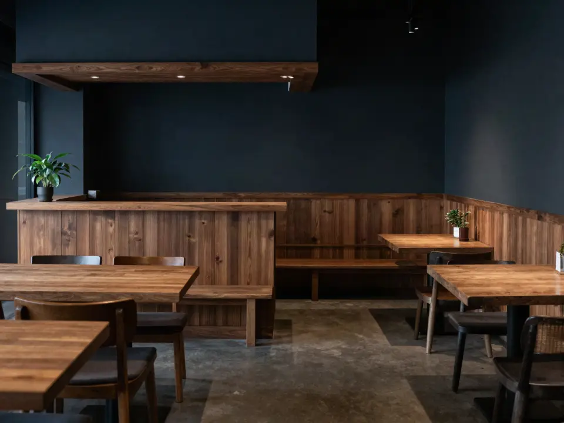

お客さまへ、このリンクを。
お客さまの画面を開く ↗印刷には店名・QR・共有URLが入ります（報告用リンクは入りません）。店名と共有URLは運営に保存されないため、印刷物やメモで保管してください。
割引・特典と引き換えにしたり、よい評価だけをお願いしたりしないでください。Googleの口コミのポリシーで禁止されています。
お店のスタッフ・ご家族・取引先など、お店と利害関係のある方は、このQRから口コミを投稿しないでください。Googleのポリシーで、雇用関係や家族関係などの「利益相反に基づくコンテンツ」は禁止されています。
店主控え（お客さまに見せないでください）
報告用リンクを開くと、店主の管理画面で、このQRから来たお客さまが選んだ話題と評価の件数（直近4週）とどこまで進んだかを見たり、お店の設定（振り分け・LINE・インスタ）を変えたりできます。件数が少ないうちは、お客さまが特定されないよう「まだ少ない」とだけ表示します。リンクを知っている人は誰でも見られるので、お店の方だけで保管してください。運営はこのリンクを保存していないため、再発行できません。お店のスタッフ・ご家族・取引先など、お店と利害関係のある方は、このQRから口コミを投稿しないでください。Googleのポリシーで、雇用関係や家族関係などの「利益相反に基づくコンテンツ」は禁止されています。データの扱い
管理画面を開く ↗作り直すと、新しい報告用リンクになります（前のQRと前の報告用リンクもそのまま使えます）。
ひとことβ 店主控え（お客さまに見せないでください）
報告用リンク（店主だけ）
お客さま用の共有リンク
報告用リンクを知っている人は誰でも件数を見られます。運営は再発行できないため、この紙は店内の見えない場所に保管してください。
報告用リンクは作れませんでした（通信できなかったため）。QRと共有リンクはそのまま使えます。報告が必要なときは、時間をおいて作り直してください。
01 / 09
飲食店・美容室・ショップのオーナーさまへ
QRを置くだけ。
お客さまが、
自分の言葉で書ける。
何がどうだったかをタップで選ぶだけ。選んだことだけが文章になります。
確認してGoogleに投稿するのは、お客さま本人です。
- 登録・カード不要
- 店名とリンクだけ
- 自動で投稿しません
 イメージ（AI生成）
イメージ（AI生成）
02 / 09
口コミ、お願いしたいけれど。
面と向かって頼むのは、気が引ける。
「何を書けばいい？」で止まる。
QRやPOPを作る時間がない。
03 / 09
お店は、QRを置くだけ。
選ぶのも投稿も、お客さま本人です。
1店主QRを置く
2お客さまタップで選ぶ
3本人Googleに投稿
実際の画面の録画（内容は架空）
04 / 09
選んだことだけが文章に。
ほめ言葉は足さず、気になったことも消しません。
選んだこと
できた文
料理よかった味・温かさ
待ち時間気になった注文から出てくるまで
料理は、味と温かさがよかったです。待ち時間は、注文から出てくるまでが気になりました。

イメージ（AI生成）05 / 09
書くのは、お客さま本人です。
ひとことβが守る、3つの約束。
気になったことも、文章から消しません。
特典と引き換えにしません。
自動で投稿しません。内容も作りません。
06 / 09
レジ横に、テーブルに。
掲示用ポスター付き。
 イメージ（AI生成）
イメージ（AI生成） イメージ（AI生成）
イメージ（AI生成） イメージ（AI生成）
イメージ（AI生成） イメージ（AI生成）
イメージ（AI生成）
喫茶 こもれび
スマホのカメラでQRを読み取り、感想をひとこと。
よかったことも、気になったことも。
https://reviews.radineer.asia/?store=…
印刷の見本（店名は架空）
写真の中のQRは飾りです。
無料でお店のQRを作る07 / 09
いまは無料で試せます。
08 / 09
体験版でできること。
声の件数は、店主だけが見られます。
- QRと共有リンク
- ポスター印刷
- 選ぶだけで候補の文
- 感想から先に選ぶ（AI）
- 店主の管理画面（声・数字・札・設定）
- 句読点の整え（AI）
- 画面の4言語表示
まだできないこと
- 口コミの一覧・返信
- 効果の分析
- 複数店舗の管理
お店の管理画面
| 話題 | よかった | ふつう | 気になった |
|---|---|---|---|
| 料理 | |||
| 接客 | |||
| 待ち時間 |
お客さまの声から、直しました
お客さまの感想は、保存しません。
保存しないもの：感想の本文・名前・連絡先
保存期間
| 時間・話題・お店ごとの件数、エラーの記録 | 13か月 |
|---|---|
| 店主のご意見 | 6か月 |
| お店の登録と設定 | 最後に使われてから1年 |
| 連打対策の記録 | 3日 |
| 試用のお申し込み | 試用期間の終了から1年 |
毎日自動で削除します。試用のお申し込み内容は、試用期間の終了から1年で削除します。正式版をお申し込みのお店は契約期間中保管します。
09 / 09
よくある質問
料金と試用
料金はかかりますか？
試用中に料金がかかることはありません。正式版に移るときは事前にご案内し、お申し込みいただいたお店だけが有料になります。
正式版の予定価格：1店舗 月2,980円（税込）。変更する場合はこのページでお知らせします。正式版の開始時期と料金は、決まりしだいこのページでお知らせします。試用店舗には、ご入力の連絡先にもご連絡します。
試用店舗の募集とは何ですか？
使っていただく店舗を、先着10店募集しています。試用中は無料です。設定で分からないことは、このページのフォームからご相談ください。使ってみた感想を、簡単なアンケートでうかがうことがあります。試用店舗の募集のフォームからお申し込みください。
AIの利用に上限はありますか？
AIの利用には上限があります。上限に達したときは、入力した文章の編集で続けられます。
やめたいときは、どうすればいいですか？
ポスターやQRを外すだけです。お店の登録情報はないため、解約の手続きもありません。
Googleのルールと3つの約束
Googleに自動で投稿されますか？
されません。お客さまがご自身でGoogleを開き、星を選んで文章を貼り付け、投稿します。投稿せずに閉じてもかまいません。
QRを作ったら、お客さまの画面を開いて試せます。試しただけでGoogleに投稿されることはありません。
Googleのルールに反しませんか？
Googleのポリシーでは、特典と引き換えに口コミを頼むこと、否定的な口コミの投稿を妨げること、よい口コミだけを選んで頼むことが禁止されています。ひとことβは特典を付けません。お店の頼み方もルールの対象なので、声かけの際はご注意ください。
ひとことβには、お店が選べる「振り分け」の設定があります（初めはオフ）。オンにすると、「気になった」が話題の半分より多いお客さまにはGoogleへの案内を出さず、選ばれた話題と評価は件数として店主にだけ届きます。この設定は、Googleのポリシーで禁止されている「よい口コミだけを選んで頼む」ことに当たるおそれがあり、口コミの削除やビジネスプロフィールの制限を受けるおそれがあります。オンにするときは、店主の管理画面でポリシーの原文とこのおそれを確かめ、同意していただきます。
お店のスタッフ・ご家族・取引先など、お店と利害関係のある方は、このQRから投稿しないでください。Googleのポリシーで「利益相反に基づくコンテンツ」（雇用関係・家族関係など）は禁止されています。店主控えにも同じ注意を載せています。
気になった感想も、そのまま文章になりますか？
はい。候補の文には、選んだ「気になった」が必ず残ります。AIが気になった点を消したり、やわらげたりすることもありません。
ただし、お店が「振り分け」をオンにしている場合、「気になった」が話題の半分より多いお客さまには、Googleへの案内を出しません。
口コミを書いてくれたお客さまに、割引をしてもいいですか？
いけません。割引・プレゼント・ポイントなどと引き換えに口コミを頼むことは、Googleのポリシーで禁止されています。お店の方にも、特典を付けないようお願いしています。
お店が文章を用意して、書いてもらえますか？
できません。投稿するかどうか、何を書くかを決めるのはお客さまです。お店が文章を用意して書いてもらうこともできません。
選べる話題はお店の種類ごとに決まった言葉で、お店が変えることはできません。
使い方
文章の候補は、どうやって作られますか？
選んだ「何が・どうだった・どこが」だけから、言い回しの違う候補を3つ組み立てます。ほめ言葉や推薦を足したり、気になった点を消したりはしません。
候補の文はAIを使わず、選んだ話題・評価・「どこが？」だけで組み立てます。お客さまは話題ごとに「どうだったか」を、よければ「どこが？」もタップで選びます。思ったことを書いて「書いた内容から選ぶ」を押すと、AIが文章から話題と評価を読み取って先に選びます（書いた言葉の中に根拠があるものだけ）。お客さまが確かめて直せます。
「気になった」を選んだことは、どの候補にも必ず残ります。「よかった」「ふつう」「気になった」は同じ見た目で並び、最初はどれも選ばれていません。
「どこが？」（例：料理なら味・温かさ・量・見た目・メニューの種類）は選ばなくてもかまいません。選んだときは、その話題と同じ評価の文になります。話題ごとの「どこが？」の項目も、お店の種類ごとに決まった言葉です。
選べる話題は、お店の種類で変わりますか？
お店の種類で変わる、選べる話題は次のとおりです。
- 飲食店・カフェ：料理／飲み物／接客／雰囲気・席／待ち時間／価格／立地・アクセス
- 美容室・サロン：技術・仕上がり／カウンセリング／接客サービス／雰囲気／待ち時間／メニュー・料金
- ショップ：品ぞろえ／接客／お店の雰囲気／お会計・待ち時間／価格
- その他：接客／雰囲気／待ち時間／価格／わかりやすさ
お客さまが自分で書くこともできますか？
できます。候補を使わず、自分で書くこともできます。そのときAIが整えるのは句読点と区切りだけで、AIが使えないときは入力した文章をそのまま編集して続けられます。
外国のお客さまも使えますか？
お客さまの画面は、日本語・英語・中国語（簡体字）・韓国語で表示できます。訳すのは画面の案内だけです。
どんなお店で使えますか？
飲食店・カフェ、美容室・サロン、ショップ。そのほか、Googleで口コミを受け付けているお店。
条件は、Googleビジネスプロフィールがあり、口コミを書いてもらうリンクを出せることだけです。
QRはどこに置けばいいですか？
レジ横やテーブル、お会計のトレーなど、お客さまの目に入る場所に置いてください。印刷すると、店名・QR・共有リンクと、ひとことの案内が1枚に入ります。QR画像（SVG）だけを保存して、お店のPOPに使うこともできます。
口コミリンクはどこで手に入りますか？
Googleビジネスプロフィールの「クチコミを依頼」から、口コミを書いてもらうリンクをコピーできます。
- Googleビジネスプロフィールを開く
- 「クチコミを依頼」を選ぶ
- 表示されたリンクをコピーして、ひとことβに貼る
スタッフは、どう声をかければいいですか？
「よろしければ、今日の感想をこちらのQRからひとことお聞かせください。よかったことも、気になったことも、どちらでも大丈夫です。」のように、よい評価だけをお願いしない言い方をおすすめしています。QRを作ると、お店の種類に合わせた声かけの例が表示されます。
よい評価だけをお願いする言い方や、特典と引き換えにする言い方はしないでください。
店主の管理画面とは何ですか？
店主だけが持つ報告用リンクで開く画面です。新しいQRから来たお客さまが選んだ話題と評価の件数（お客さまの声）、QRを開いてから候補・コピー・Googleまで進んだ件数と日ごとの推移、効果を確かめる欄、「直しました」の札、お店の設定（振り分け・LINE・インスタ）があります。件数が少ないうちは、お客さまが特定されないよう表示しません。
LINE公式アカウントの友だち追加URLとインスタのURLを登録すると、お客さまの画面のいちばん下に、評価とは関係なく、すべてのお客さまに同じボタンが出ます。特典などの文言は付きません。
体験版で、まだできないことは？
口コミの一覧・返信、効果の分析、複数店舗の管理は、まだできません。
お客さまのデータ
お客さまの個人情報は扱いますか？
お客さまに名前や連絡先の入力はお願いしていません。感想の本文もデータベースに保存しません。
データの扱いを、くわしく知りたい
- 感想の本文は、ひとことβのデータベースに保存しません。選んだ話題からの文章の候補は、お客さまのスマホの中だけで組み立てます。お客さまが書いた感想は、句読点を整えるときと、話題と評価を読み取るときだけ、Cloudflare Workers AIへ送ります。
- 共有リンクに入るのは、店名・Googleの口コミリンク・お店の種類と、新しく作ったQRではお店ごとの件数を数えるための乱数の店ID（店名から作ったものではありません）だけです。
- 利用状況は、日付と操作の種類だけを数えます。店名・本文・IPアドレスは送りも保存もしません。
- 候補を作るときに選んだ話題と評価の組み合わせの件数を、業種ごとに数えます。店舗やお客さまとは結びつけず、感想の文章は送りません。
- 新しいQRでは、同じ件数をお店ごとにも数え、店主だけが持つ報告用リンクで見られます。件数が少ないうちは、お客さまが特定されないよう表示しません。
- お客さま画面の各段階に、開いてから何秒ごろ着いたか（10秒・20秒などの区切り）を数えます。秒そのもの・本文・店名は送りません。
- 時間の計測・話題の件数・お店ごとの件数・エラーの記録は13か月、店主のご意見は6か月、お店の登録と設定は最後に使われてから1年で、毎日自動で削除します。連打対策の記録は3日で消します。
- お店が管理画面で設定した振り分けのオン・オフと同意した日時、LINE・インスタのURLは、店IDとひも付けて保存します。振り分けがオンのあいだは、Googleへの案内を出したか出さなかったかの件数と、出さなかったお客さまの話題と評価の件数も、お店ごとに数えます。
- 試用のお申し込み内容は、試用期間の終了から1年で削除します。正式版をお申し込みのお店は契約期間中保管します。
運営：合同会社Radineer お問い合わせ
どんな時間でしたか？
タップで選ぶだけで、文章の候補ができます。
自分の言葉で書くこともできます。
それぞれ、どうでしたか？
すべての話題で、よかった・ふつう・気になった のどれかを選んでください。「どこが？」は選ばなくても大丈夫です。
書いた文章はAIが読み取って、下の表を先に選びます（違うところは直せます）。文章は句読点だけを整えて、候補の最後に付けます。名前・連絡先などの個人情報は書かないでください。200文字まで。
近いものを1つ選んでください
あなたが選んだことだけで組み立てた文章です。言い回しだけが違います。選んだあとで自由に直せます。
この内容で伝わりますか？
Googleを開く ↗Googleで貼り付けて、星と内容を確認してください。投稿はご自身の操作で行います。自動では投稿されません。